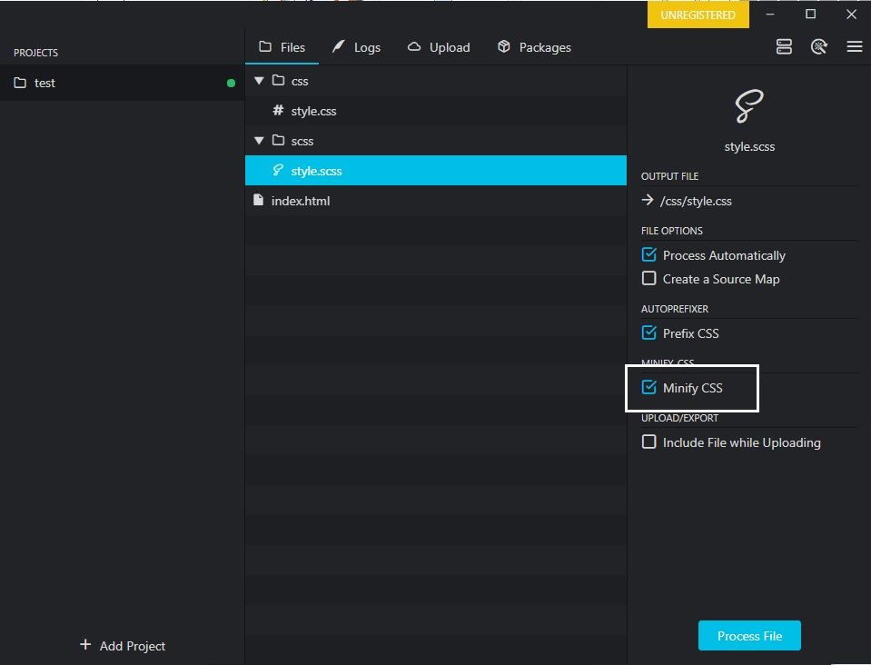
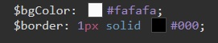

Официальный сайт препроцессова SASS - https://sass-scss.ru
Существует две технологии: SASS и SCSS. По сути это одно и тоже, с той только разницей что у них немного отличается синтаксис. В SCSS используются фигурные скобки и точка с запятой. В SASS используются отступы.
Заходим на сайт SASS? переходим в раздел INSTALL и жмем ссылку Prepros. В открывшемся окне жмем кнопку "Download Free Unlimites Trial". Установка тривиальная.
По умолчанию Sublime Text не поддерживает расширение SASS (SCSS), для этого надо установить плагин - SASS
В папке с проектом, создаем папку CSS и там создаем файл style.css
Дополнительно в папке с проектом создаем папку SCSS и в ней файл style.scss
ВАЖНО! что бы имя файла CSS совпадало с именем файла SCSS
Открываем Prepros и просто перетаскиваем в него папку с проектом.
Нажимая на файл style.scss, справа мы увидим чекбоксы конфигурации. Проверяем что бы был нажат - Minify CSS
Теперь необходимо включить синхронизацию с браузером. Для этого вверху справа жмем на кнопку и ставим чекбокс 'Synchronize Browsers'
Теперь что бы открыть верстку в браузере жмем по проекту ПКМ и выбираем Open Preview in и выбираем через какой браузер надо открыть верстку
Объявление переменной:
$ИМЯ_ПЕРЕМЕННОЙ: ЗНАЧЕНИЕ ;
Использование:
рассмотрим код html
как раньше на простом CSS мы могли в таком случае добраться до списка который внутри блока с классом test?
C помощью SASS мы можем использовать вложенные стили, выглядит это вот так:
Благодаря миксинам мы можем создавать переиспользываемые блоки в CSS, иными словами то мы можем создать некий шаблон который будет вмещать определенные свойства и далее этот шаблон мы можем использовать как свойство для различных блоков.
создание Миксина
применение Миксина
D миксин можно передавать аргумент. Как это выглядит:
Оператор @content позволяет нам редактировать миксины, прямо в коде атрибута
Указание оператора @content
Редактирование миксина
Т.е. открываются фигурные скобки и внутри них указываются дополнительные свойства
Как мы прописывали псевдоклассы и псевдоэлементы в CSS
Как теперь прописываем в SCSS
т.е. внутри элемента и с использованием амперсанта (&)
В SASS есть возможность разбить один файл на несколько файлов и потом все эти файлы импортировать в один общий файл. Например у нас верстка состоит из секций, мы можем для каждой секции создать отдельный файл SCSS и затем все эти файлы импортировать в один общий
Как импортировать? создаем файлs SCSS, которые будут содержать код стилей секций. Затем в Prepros отключаем автокомпиляцию.
Теперь в файле style.scss в самом верху добавляем такие строчки
Название обязательно в двойных кавычках